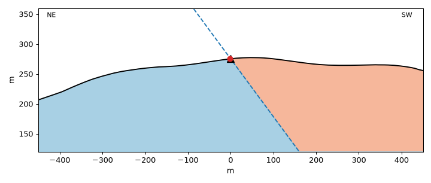
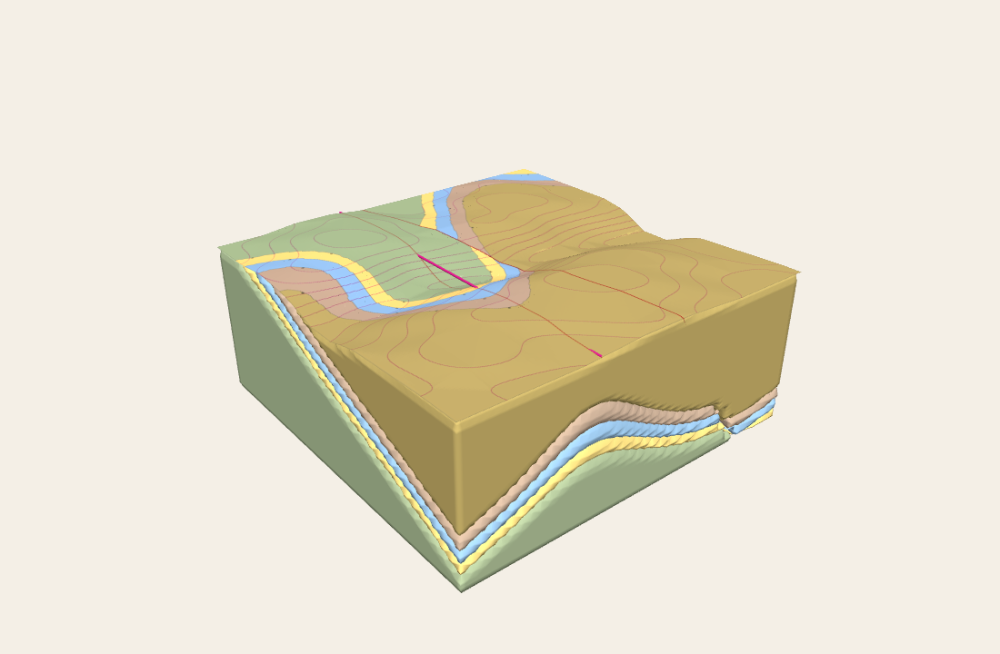

図 1－サンプル点 11（O5/O4、44°/241°）。茶：地形等高線、青破線：境界面の構造等高線、 赤点：同標高の交点、赤線：予測露頭線（F = 0）。
露頭点の姿勢（傾斜／傾斜方位）と数値標高モデル（DEM）から、構造等高線法により地層境界の露頭線を予測し、 編集した境界線と断層から地質図を作成し、さらに 3D 地質モデルと地質断面を作成します。
| ① 露頭点 ＋DEM＋断層 | → | ② 地層境界予測線を作成 （一時レイヤ） | → | ③ QGIS で 予測線を編集 | → | ④ 地質図を作成 （geology ポリゴン） | → | ⑤ 3D モデルと断面 （GeoPackage、CAD、3D ビューア） |
ツールはメニュー プラグイン ▸ 地層境界自動トレース、ツールバー、プロセッシングツールボックス （グループ「地質図作成」）にあります。バッチ処理やモデルにも組み込めます。
短い範囲では地層境界面を平面とみなせます。露頭点 P0(x0, y0) は地表にあるので、 標高 z0 は DEM から読み取ります。傾斜 δ、傾斜方位 α のとき、この点を通る境界面は
zs(x, y) = z0 − tan δ · [ (x − x0) sin α + (y − y0) cos α ]
境界面の構造等高線は走向に平行で、等高線間隔 h に対する水平間隔は h / tan δ です。 構造等高線と同じ標高の地形等高線の交点が境界の露頭位置であり、それらを結ぶと露頭線になります。
本プラグインは等高線の標高だけでなく、DEM の各セルで地表と境界面の高さの差
F(x, y) = DEM(x, y) − zs(x, y)
を計算し、F = 0 の線を点の両側へ連続的に追跡します（GDAL の等値線生成、セル間は線形補間）。

そのため予測線は地形に応じて谷に入り込み、尾根を回り込みます（V 字則）。傾斜が緩いほど等高線に沿い、 垂直層では直線になります。
上位・下位コードが同じで同じ断層ブロックにある点は同じ境界に属します。各点の平面を逆距離加重で混合します：
z(x, y) = Σ wi zi(x, y) / Σ wi、 wi = 1 / dip
zi は点 i の平面、di はその点までの距離、p は「混合の重み指数」（既定 4）です。 この曲面はすべての点を通り、各点ではその点の姿勢を保ちます。点の間では姿勢が徐々に変わるので、 褶曲のヒンジやノーズも回り込めます。得られた F = 0 の線はすべての点を通り、同じ境界の点を端点でつなぎます。 なお分かれた部分（DEM の欠測など）は、自由端の間隔が「同じ境界の端点を接続する最大間隔」以下なら直線で接続します。
もう一つの手法「各点を個別の平面で」は各点自身の平面だけで追跡し、個々の姿勢データの確認に役立ちます。

断層と DEM の図郭で図幅を断層ブロックに分けます。点の混合はブロック内だけで行い、予測線もそのブロック内に 切り取るため、断層で止まり、端点はちょうど断層線上に来ます。図幅内で消滅する断層も、交差する予測線を切断します。
各線の左右で F の符号を調べ、フィールド upper_side に L または R を記録します。
線の始点から終点へ向かって、上位層が左右どちらに露出するかを表します。逆転層（overturned = 1）では左右を入れ替えます。
このフィールドがあれば、地質図作成時に他の情報なしでポリゴンの地層を判定できます。
編集で線の向きを反転した場合は L／R も入れ替えてください。新しく線を描いた場合は
unit_u、unit_d、分かれば upper_side も入力してください。
upper_side 側のポリゴンに unit_u、
反対側に unit_d を与えます（区間長で重み付け）。断層と重なる区間は除外します。unit_code を持つ bedding など）は含まれるポリゴンに投票し、優先されます。upper_side のない線では、既知の側から反対側を推定します
（U/D 境界の片側が U なら反対側は D）。推定は断層を越えません。unit_name, strat_order, series, thick_m, kind とスタイルはテンプレート（既存の geology など）からコピーします。
テンプレートがない場合、strat_order は上下関係から求めます（1＝最古）。
品質チェック：フィールド qa は ok、conflict（周囲の境界の判定が矛盾。多くは隙間や交差）、
propagated（線をまたいだ推定）、unassigned（未判定）です。2 番目の出力「閉じていない境界端点」は
どの線にも接していない端点を示します。接続して再実行してください。
| レイヤ | 種類 | フィールド（既定名） |
|---|---|---|
| 地層境界露頭点 | ポイント | dip 傾斜（0–90°）、dip_dir 傾斜方位（0–360°、または右手則の走向）、
unit_code_u 上位層コード、unit_code_d 下位層コード、overturned 逆転（0/1、任意） |
| DEM | ラスタ（GDAL ファイル） | メートル単位の投影座標系。解像度が線の細かさを決めます |
| 断層 | ライン | フィールドは任意。ブロックを分けるには図郭か他の断層まで延ばしてください |
| 地層コード点（任意） | ポイント | unit_code |
| テンプレート（任意） | ポリゴン | unit_code, unit_name, strat_order, series, thick_m, kind |
レイヤの座標系は異なっていても構いません。予測線は DEM の座標系、地質図は境界線の座標系に変換して処理します。
qa と「閉じていない境界端点」レイヤを確認し、線を修正して手順 4 を再実行します。| パラメータ | 説明 |
|---|---|
| 方位フィールドの内容 | 傾斜方位、または走向（右手則：傾斜方位＝走向＋90°）。 |
| 手法 | 「同じ境界の点をつなぐ」（既定）または「各点を個別の平面で」。 |
| 同じ境界の端点を接続する最大間隔 | 同じ境界の自由端がこの距離（地図単位）以内なら直線で接続。0＝接続しない。断層・図郭上の端点は接続しません。 |
| 混合の重み指数（詳細） | 大きいほど各点の平面が点の周囲で遠くまで保たれ、小さいほど滑らかで平均的な曲面になります。3–6 が目安。 |
| 点からの最大延長距離（詳細） | 予測線を点からこの距離以内に制限（0＝断層ブロック全体）。 |
| 露頭点を通らない分岐も残す（詳細） | 同じ曲面と地表の他の交線（谷の対岸の同じ境界など）も残します。 |
| 最小線長（詳細） | 短い断片を削除します。 |
| パラメータ | 説明 |
|---|---|
| 上位／下位層コード、上位層の側フィールド | 既定 unit_u、unit_d、upper_side（予測線ツールが出力）。 |
| 図郭範囲 | 地質図の枠。空欄なら線の範囲を使います。 |
| 線端のスナップ許容距離 | 他の線までこの距離以内の線端は接続します（地図単位、既定 5）。 |
| 隣接区域に統合する未判定の小片の面積上限（詳細） | この面積未満の未判定ポリゴンを隣に統合します。 |
| 地層ごとにポリゴンを統合 | 地層ごとに 1 つの（マルチ）ポリゴン。サンプルの geology と同じ形式です。 |
| レイヤ | フィールド | 内容 |
|---|---|---|
| 地層境界予測線 | bnd_id | 線番号 |
| unit_u / unit_d | 上位／下位層コード | |
| upper_side | L／R：線の向きに対する上位層の側 | |
| block_id | 断層ブロック番号 | |
| n_pts | 線が通る露頭点の数 | |
| pt_ids | その地物 ID | |
| method | blend（混合）／individual（個別） | |
| length_m | 長さ | |
| 地質図 geology | unit_code … kind | サンプルの geology と同じスキーマ |
| qa | ok／conflict／propagated／unassigned | |
| area_m2 | 面積 |
「3D 地質モデルと地質断面を作成」は、Web アプリ geomap-workbench と同じ陰的ポテンシャル場法で地質図を 3D モデルに変換します。
series；大きいほど不整合の上）にまとめ、strat_order（1＝最古）で並べます。kind = ign の地層は地質図から鉛直に延ばします。volume_m3）も計算します。

| パラメータ | 説明 |
|---|---|
| 地質図とフィールド | 地層コード、層序、名称、層群、層厚、岩種（sed／ign）。 |
| 断層：傾斜／傾斜方位フィールド | 断層面の姿勢（空欄なら傾斜 60°）。 |
| 姿勢点 1・2 | 傾斜、傾斜方位（または走向）、地層コード（任意；なければ点の下の地層）、逆転。 |
| 断面線 | 線ごとに 1 断面（フィールド name、例：A-A'）。空欄なら走向に直交する断面を 1 本作成。 |
| 断面の垂直誇張 | 断面図の垂直誇張。 |
| セルサイズ／モデル深さ | 0＝自動（図幅幅の 1/40；深さは最低地表から図幅幅の 35%）。小さいほど滑らかですがファイルは大きくなります。 |
| 層厚を境界面の間隔に使う（詳細） | 境界から求めず、thick_m で境界面の間隔を固定します。 |
| 褶曲軸跡（トレンド、プランジ、種類、名称） | ヒンジでは地層面が褶曲軸を含むため、軸跡上の点が姿勢条件になります（トレンド空欄＝軸跡の方向、プランジ空欄＝0）。褶曲軸は 3D ビューアに表示し、断面に記号を付け、fold_axes_3d に保存します。 |
| 地形面に貼る地図レイヤ | 既定は QGIS で表示中のレイヤ。描画して 3D ビューアと OBJ の地形面に貼り、*_map.png＋.pgw として保存します。 |
| 出力ファイル | GeoPackage、DXF（polyface mesh、地層ごとのレイヤ）、OBJ + MTL（色・地形テクスチャ付き）、STL（地層ごと、既定は出力しない）、3D ビューアをそれぞれ別のファイル名・フォルダに保存でき、省略もできます。一時ファイルのままの出力は GeoPackage と同じフォルダに保存します。 |
| GeoPackage レイヤ | 内容 |
|---|---|
| units_3d | 各地層の閉じた 3D 立体（MultiPolygonZ の三角形）と体積 |
| horizons_3d／faults_3d／terrain_3d | 地層境界面、断層面、地層で色分けした地形面 |
| fold_axes_3d | 地形面に沿わせた褶曲軸跡 |
| section_fences_3d | 断面線上に立てた 3D 断面（QGIS の 3D マップビュー用） |
| section_units／section_profile／section_faults／section_frame／section_labels | 地図座標で地質図の下に配置した断面図（x＝距離、y＝標高×垂直誇張）。印刷レイアウトにそのまま使えます |
| section_lines／model_info | 地図上の断面線；パラメータ、境界面の値、警告 |
このほか（ファイル名はダイアログで指定）*.dxf、*.obj + *.mtl、*_unit_*.stl、*_viewer.html を出力します。
最後はオフラインの 3D ビューア（three.js）で、地層の表示切替、透明度、垂直誇張、東西／南北の切断、断面表示、PNG 保存ができます。
アドレスに #nopanel を付けるとパネルを隠してスクリーンショットを撮れます。
ライセンス：GNU GPL v2 以降。